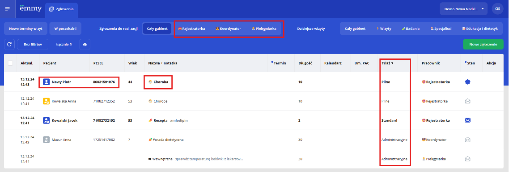
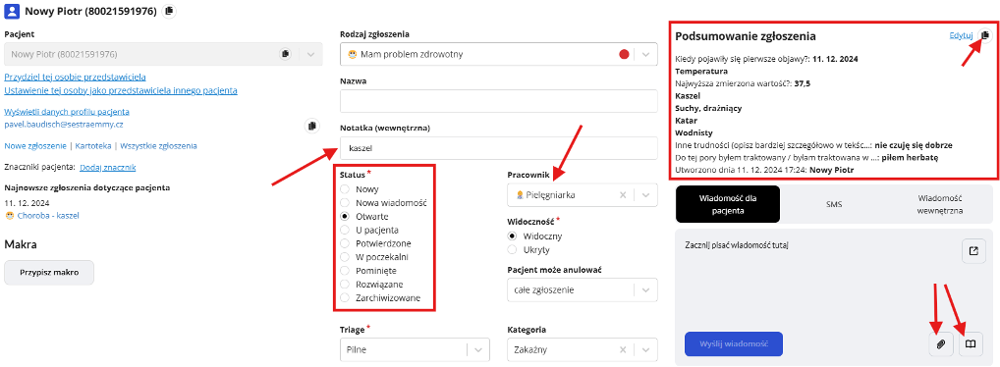
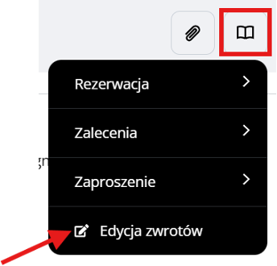

⬅ Zpět na hlavní stránku
📖 Emmy Manual - Polska
Podstawowe wymagania po zalogowaniu do aplikacji
- ✅ Identyfikacja pacjenta jest szybka i prosta – do dokładniejszej identyfikacji służy **numer PESEL**.
- ✅ Nazwa zgłoszenia jednoznacznie wskazuje, czego dotyczy wiadomość.
- ✅ Triage (priorytety) sortuje zgłoszenia według istotności klinicznej (najpierw problemy zdrowotne, na końcu sprawy administracyjne).
- ✅ Każdy pracownik widzi tylko zgłoszenia, które go dotyczą – dzięki **filtrom**.
- ✅ Widoczne są tylko zgłoszenia, które **czekają na przetworzenie** (statusy: nowy, nowa wiadomość, otwarte).
Identyfikacja pacjenta
✅ Identyfikacja pacjenta jest szybka i prosta – do dokładniejszej identyfikacji służy numer PESEL.

Widok zgłoszenia
- 📌 Identyfikacja pacjenta + przegląd jego wcześniejszych zgłoszeń.
- 📌 Atrybuty zgłoszenia w drugiej kolumnie.
- 📌 Podsumowanie wiadomości (wypełnionego formularza) od pacjenta.
- 📌 Łatwe kopiowanie treści jednym przyciskiem.
- 📌 Biblioteka gotowych odpowiedzi dla szybszej komunikacji.
- 📌 Możliwość bezpiecznego wysłania pacjentowi wrażliwych informacji jako załącznika.

Statusy zgłoszenia
- 🟢 Nowy – nowo utworzone zgłoszenie przez pacjenta.
- 🟡 Nowa wiadomość – nowa wiadomość od pacjenta.
- 🟠 Otwarte – otwarta wiadomość od pacjenta (odpowiednik „przeczytanego e-maila”).
- 🔵 U pacjenta – zmienia się automatycznie, gdy wiadomość zostanie wysłana do pacjenta.
- ✅ Rozwiązane – dla pacjenta zamknięte, nie może już odpowiadać.
- ❌ Zarchiwizowane – ukrywa zgłoszenie przed pacjentem, pozostaje w historii jako przekreślone.
Gotowe odpowiedzi - szablony (ikona książki)
📌 Przygotowane wzory odpowiedzi – ułatwiają szybką komunikację.
📌 Użytkownik może edytować szablony w ustawieniach.
📌 Szablony mogą być podzielone na kategorie.
📌 Mogą zawierać zmienne wartości (np. imię pacjenta).
Załączniki (ikona spinacza)
📌 Możliwość dodania plików do wiadomości w celu bezpiecznego przesyłania dokumentów pacjentowi.
